Notre histoire avec le train LEGO
Qui n'aiment pas les trains lèvent la main ! Nous pensons qu'il y en aura peu, car locomotives et wagons ont toujours amusé les petits comme les grands. LEGO l'a bien compris et a lancé différentes gammes dédiées au rail depuis le milieu des années 601,2,3 !
De notre côté, nous avons voulu très tôt intégré un train à notre Terrier (cf. chapitres "La genèse", "En quête des sets" et "Première ébauche" de la partie "Histoire du Terrier"). Que ce soit avec le "Winter Holiday Train" (Set 10254) ou l'utilisation de MOCs par la suite, la locomotive et ses wagons ont représenté un élément majeur dans le Brick Winter Burrow.
C'est la raison pour laquelle nous avons voulu écrire ce premier chapitre dédié à notre parcours avec le train de la célèbre marque danoise. Nous pensons qu'il pourra ravir les passionnés, et pourquoi pas inciter les plus indécis à rajouter quelques rails dans leurs créations !
Tombés dans la marmite étant petits
Le train est quelque chose de presque sacré dans notre famille. Dès leurs plus jeunes âges, notre père et notre oncle ont passé des vacances entières à construire des circuits avec leurs trains électriques.
En plein hiver, dès que l'école se terminait, les lits dans leur chambre étaient poussés contre les murs afin de faire un maximum d'espace. Puis, place aux aiguillages et aux wagons ! Le modélisme ferroviaire ne peut attendre !
Durant les beaux jours d'été, les circuits étaient encore plus gros et circulaient dans toute la maison, au grand dam de notre grand-mère. Ils partaient même parfois dans le jardin et les trains défilaient à toute allure pendant des heures. Des dizaines d'années plus tard, évoquer ces quelques souvenirs leur ramènent toujours des sourires aux lèvres.
C'est probablement ce qui a poussé notre père à nous initier à ce passe-temps dévorant très tôt. Et nous avons eu la chance d'en profiter ; nous nous revoyons jouer avec la locomotive diesel BB 5675565, ou bien le mythique TGV Sud-Est6, tous les deux de la marque Jouef.
{kind=link}
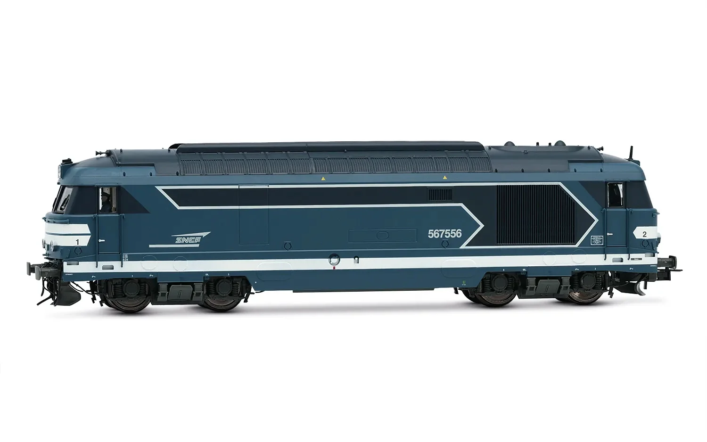
{kind=link}
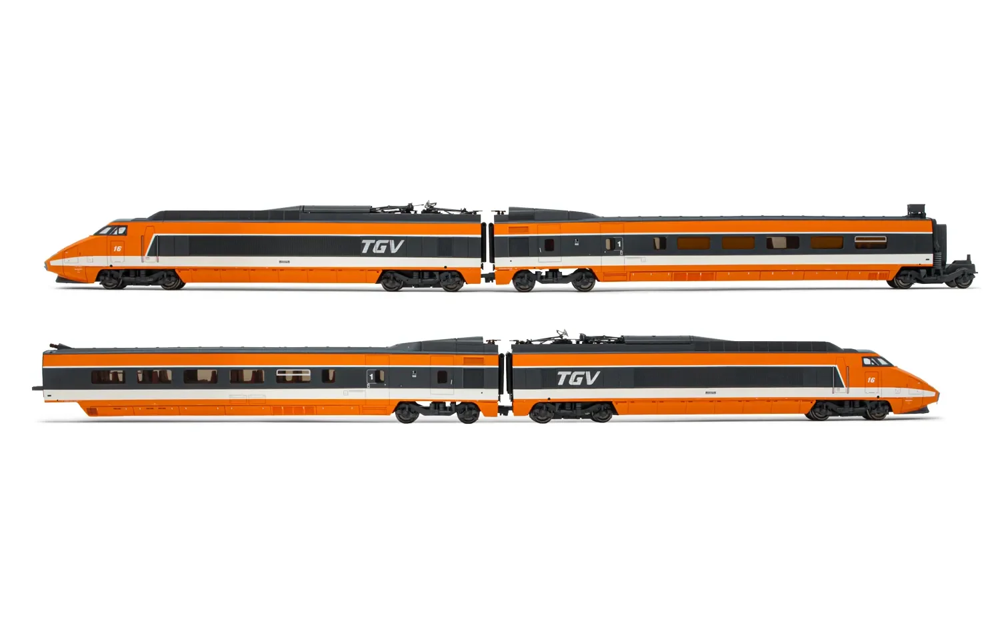
Monter dans le train LEGO
Puis, en feuilletant le magazine LEGO, nous découvrîmes le système 9V. Inauguré avec le "Metroliner" (Set 4558)4, ce fut la "Santa Fe Super Chief" (Set 10020) qui fût, pour nous, une véritable claque visuelle.
Ce rouge pétant, cette grosse carcasse digne des locomotives américaines ; quelle beauté ! Nous étions conquis.
{kind=link}
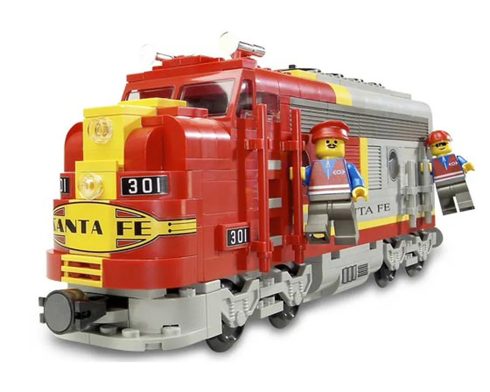
Le train LEGO nous paraissait nettement plus proche du jouet que du modélisme, ce qui a sans doute renforcé notre intérêt pour ce dernier.
Montant initial substantiel
Cependant, l'investissement de départ pour s'équiper restait conséquent.
À commencer par les rails ; entre les "Straight Rails" (Set 4515), les "Curved Rails" (Set 4520), et pourquoi pas le "Manual Points with Track" (Set 4531), sans oublier bien entendu le "Transformer and Speed Regulator" (Set 4548), essentiel pour pouvoir faire avancer le train, le tout représentait une somme importante.
Obtenir un réseau fermé n'était pas une mince affaire. Nous avons donc dû attendre quelques années avant de pouvoir profiter de notre premier circuit de train LEGO.
{kind=link}
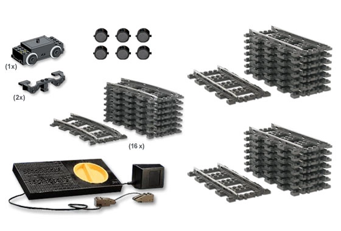
Un train peut en cacher un autre
Passées quelques années, la "Santa Fe Super Chief" (Set 10020) fût retirée par LEGO et remplacée par la sublime "Burlington Northern Santa Fe (BNSF) Locomotive" (Set 10133).
Avec 2 wagons "Santa Fe Cars - Set II" (Set 10022), nous étions enfin prêts pour nous amuser pendant des journées entières.
{kind=link}
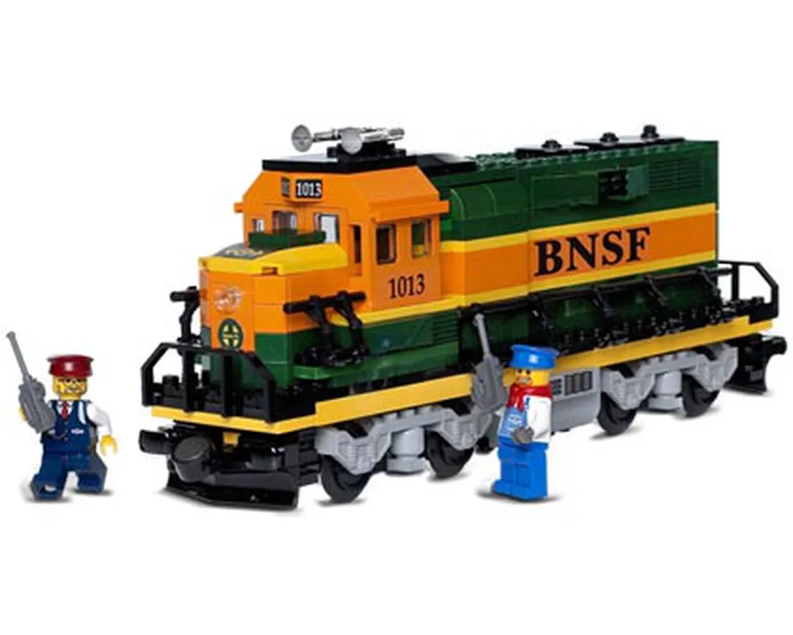
{kind=link}
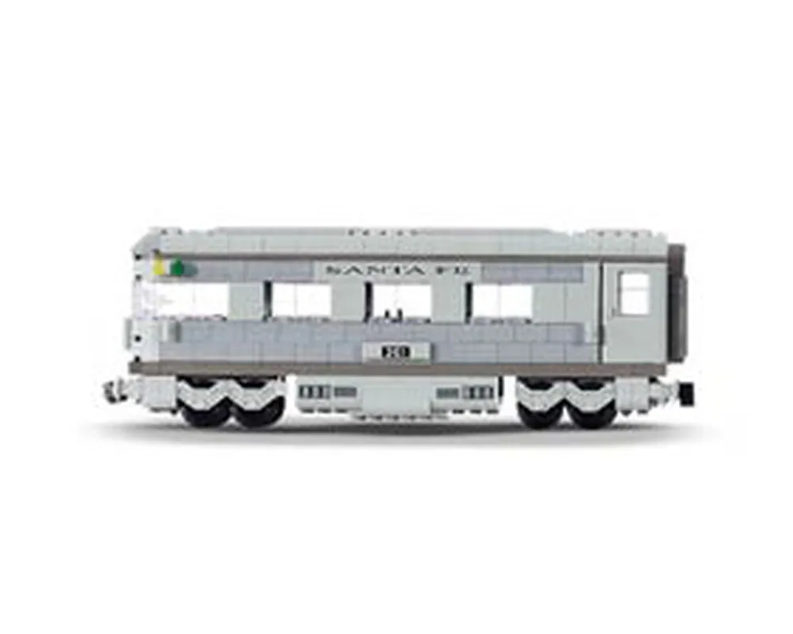
Notre collection s'étoffa par la suite avec les wagons de marchandise "TTX Intermodal Double-Stack Car" (Set 10170) et d'autres modèles pouvant habiller notre circuit ferroviaire, comme la "Grand Central Station" (Set 4513) et la "Cargo Crane" (Set 4514).

{kind=link}
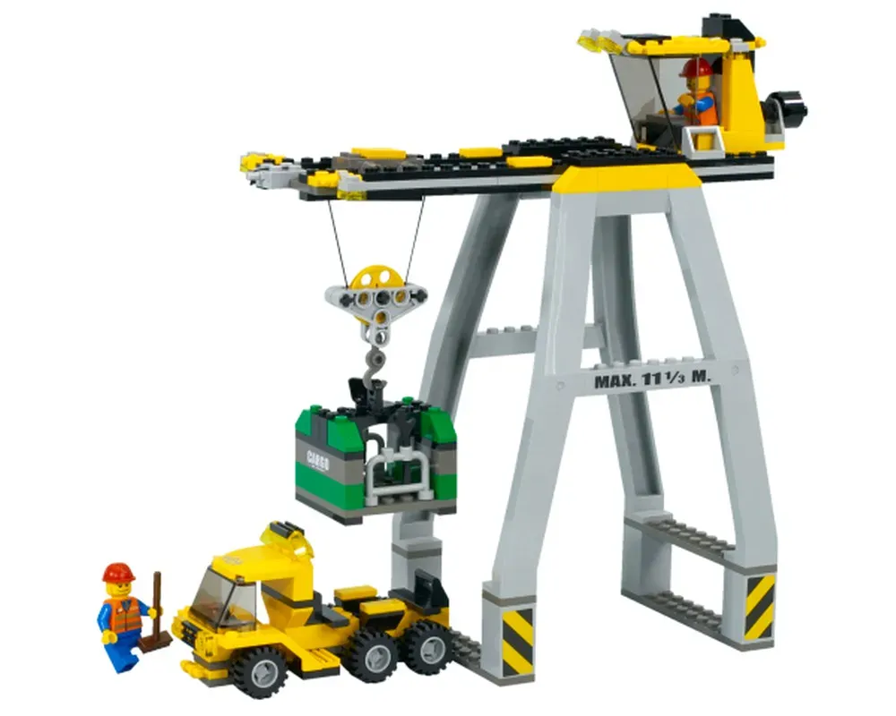
Le Père Noël se déplace en locomotive
Nous évoquons partiellement notre choix de train pour le Brick Winter Burrow dans les chapitres "En quête des sets" et "Première ébauche" de la partie "Histoire du Terrier", mais nous souhaitions le rappeler dans les quelques lignes ci-dessous.
Animation principale
Avec notre passé lié aux locomotives et aux wagons, lorsque nous avons conçu notre village d'hiver, la question du train s'est logiquement très vite posée ; en voulions-nous un ?
Absolument. L'idée de le faire passer dans un tunnel et d'avoir une montagne était peu originale, certes, mais tout de même inscrite dans notre cahier des charges. Aussi, une locomotive et des wagons circulant dans un ensemble nous permettait d'avoir une animation.
À nos débuts, nous avons rapidement écarté la possibilité d'utiliser un MOC. Les options étaient trop nombreuses et nous n'étions pas encore certains de ce que nous voulions. Nous nous sommes donc tournés vers un modèle de la marque Danoise.
Version 2006 ou 2016 ?
Avant que le thème Winter Village Collection n'existe, LEGO avait déjà sorti en 2006 un train qui aurait pu intégrer notre Terrier ; le "Holiday Train" (Set 10173). Cette identité visuelle liée aux fêtes de fin d'année nous plaisait.
10 ans plus tard, en 2016, alors que nous commencions à poser nos premières briques sur notre diorama, LEGO lançait le "Winter Holiday Train" (Set 10254). Certaines comparaisons7,8,9,10,11 entre ces deux modèles sont alors apparues afin d'aider les indécis comme nous.


Après quelques heures de lecture, nous nous sommes finalement arrêtés sur la version 2016 du "Holiday Train". Cela était dû notamment à cause des couleurs dorées que nous trouvions plus en adéquation avec ce que nous voulions, mais aussi grâce à l'intégration du système Power Functions12. Une solution déjà prête pour voir locomotive et wagons se mouvoir.
{kind=link}
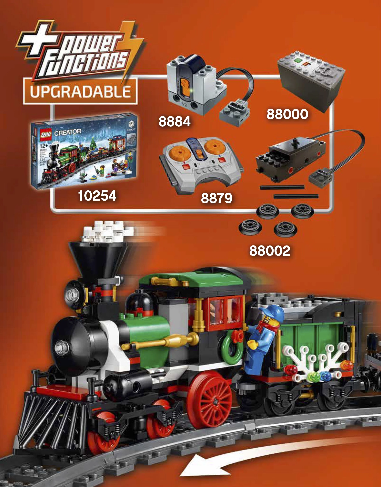
Des bielles, s'il-vous-plaît !
Même si le "Winter Holiday Train" (Set 10254) nous plaisait beaucoup, nous avions le sentiment qu'il lui manquait quelque chose. Il avait du charme, certes, mais restait un peu éloigné du réalisme. À nos yeux, un simple détail aurait suffi à lui donner davantage de caractère.
Comme beaucoup, nous avons une affection particulière pour les vieux trains à vapeur. Ces derniers possèdent des locomotives qui ont des bielles, des pièces mécaniques ayant pour but de transmettre une force, un position ou un mouvement13. Elles sont attachées aux roues et font parties de l'identité de ces locomotives anciennes.
{kind=link}
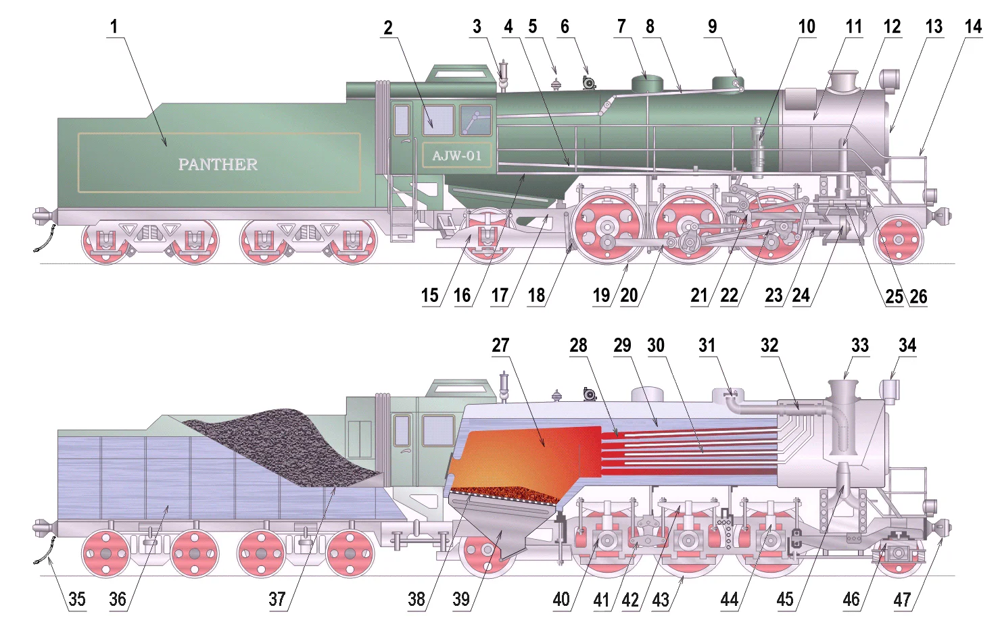
Par le passé, LEGO a su faire preuve de réalisme quand il s'agit de mécanisation. Nous pensons par exemple à la "Technic Engine Connecting Rod" (Réf. 2852), une pièce qui est souvent associée avec le "Technic Engine Piston Round" (Réf. 2851). Cette combinaison est employée pour simuler un moteur de type V6 ou V8.
Malheureusement, pour le train, nous n'avons pas fait le même constat. Nous trouvions que la locomotive du "Winter Holiday Train" (Set 10254) manquait d'authenticité, pour ne pas dire, de réalisme. Probablement pour des soucis de coûts, LEGO a choisi d'utiliser seulement la pièce "Train Motor 9V Decorative Side with Open Hub Points" (Réf. 2871b) pour habiller les roues de la locomotive.
{kind=link}
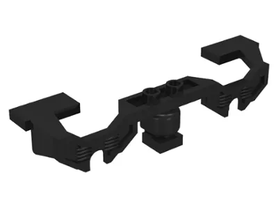
De notre côté, nous souhaitions avoir des bielles d'accouplement ("Coupling rod" ou "Side rod" en anglais), représentées par le numéro 20 dans l'image ci-dessus14.
Ce petit détail nous a amené aux MOCs de trains et à la customisation. À notre grande surprise, nous n'étions pas les seuls à nous intéresser à cette touche de réalisme15. L'excellent article "LEGO Coupling Rods: The Orient Express and the Steam Train Renaissance" de Michael Gale, disponible sur le site BrickNerd en est d'ailleurs la preuve.
Place à la customisation
Quelques années après la création du Brick Winter Burrow (cf. chapitre "Version 2022"), nous nous sommes tournés vers le site Rebrickable à la recherche de MOCs. Le coup de cœur fut immédiat lorsque nous vîmes le "Motorized and Improved Christmas Train"16 de l'AFOL seejay, montré dans l'image ci-dessous.
La locomotive était plus grande et nous semblait bien plus réaliste. Des bielles étaient cette fois-ci présentes, et voir la pièce "Technic, Liftarm Thin 1 x 7" (Réf. 32065) se mouvoir était absolument incroyable. Le wagon restaurant, qui était plus imposant et avec une table plus longue, nous plaisait également.
Bien que ce MOC utilisait le système Powered UP16 et non Power Functions, ce qui a nécessité une commande de pièces supplémentaires, nous avions enfin un train dont nous étions satisfaits !
{kind=link}
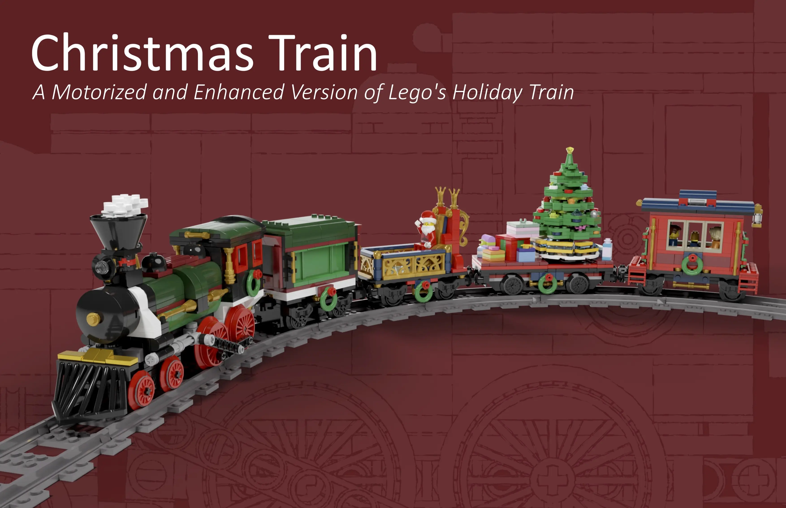
{kind=link}
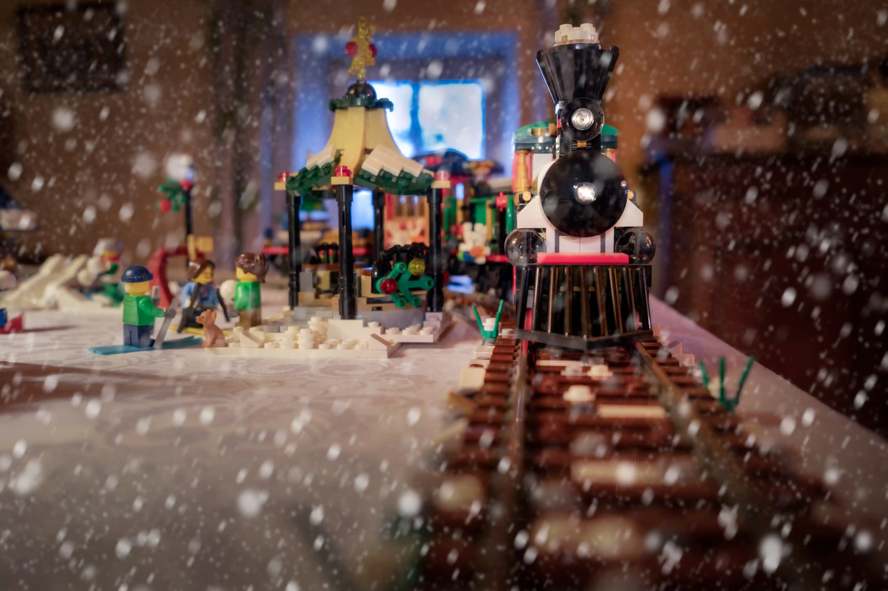
Jamais en gare
Par la suite, nous nous sommes écartés du MOC de l'AFOL seejay pour laisser place à d'autres créations, jusqu'à ce que nous tentions de concevoir notre propre locomotive et nos propres wagons.
Au fil des années, nous n'avons jamais cessé d'apporter des modifications à notre train, qu'elles soient esthétiques ou mécaniques. En un sens, nous avons perpétué la tradition de notre père et de notre oncle, qui réaménageaient avec enthousiasme leur chambre pour laisser la place aux rails.
Notre histoire avec le train LEGO est avant tout une histoire d'amour, un attachement familial. Sans aucun doute, c'est aussi une volonté de voir des briques se mouvoir dans l'espace, comme les trains ont toujours su le faire, de génération en génération.
Sources
BrickNerd: Making Trains Move - The History of LEGO Trains, Track, Motors and More (Archive) ↩
Brick Fanatics: First Impressions, LEGO 10254 Winter Holiday Train (Archive) ↩
LeggoMyJamesO: LEGO Holiday Train 10173 Review and Side By Side 10254 ↩
For Bricks and Giggles: LEGO Holiday Train 10173 (2006) vs Winter Holiday Train 10254 (2016) Build, Compare, and Review ↩
TheBrickBlogger: LEGO Holiday Train Review, Thoughts, Tweaks (Archive) ↩
Hoth Bricks: I tested for you, 10254 Winter Holiday Train (Archive) ↩
BrickNerd: LEGO Coupling Rods - The Orient Express and the Steam Train Renaissance (Archive) ↩
Rebrickable: seejay's Motorized and Improved Christmas Train (Archive) ↩↩